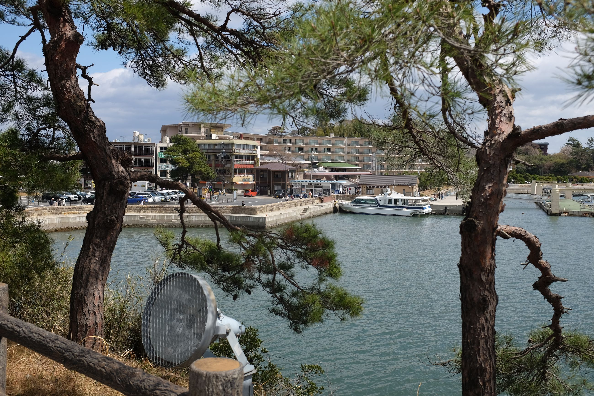
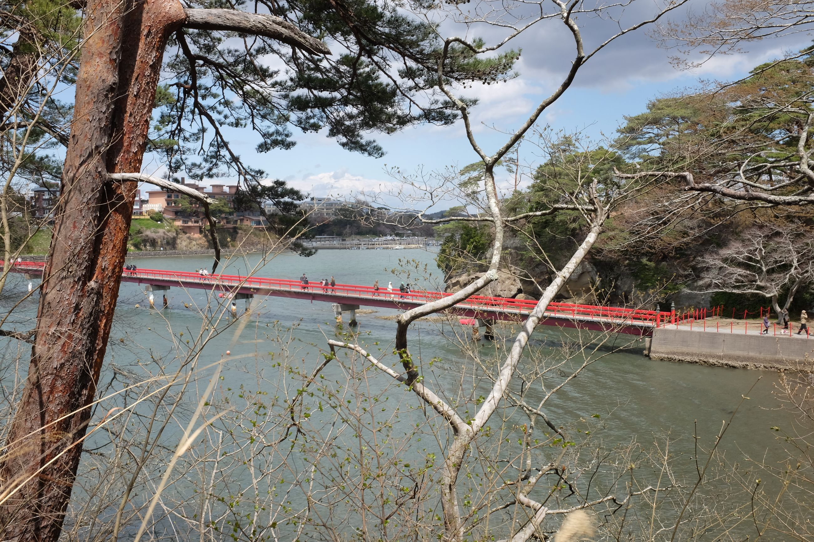
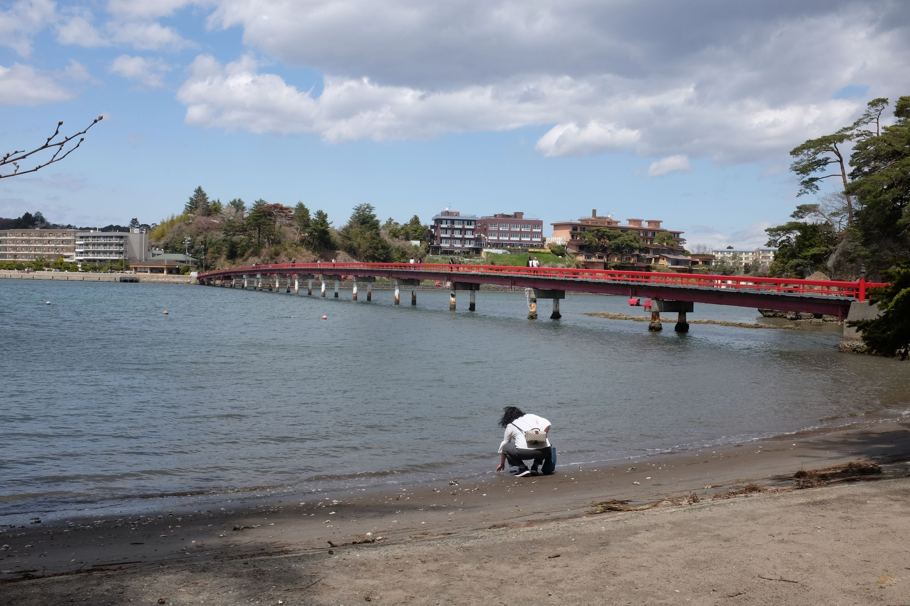

Last stop: Matsushima.
We make it into Sendai the day before and spend the evening. It's the biggest city on the east coast, so the business men are back, as are the tourists. The next day, we do a day trip to Matsushima Island -- Pine Island.
There is a small ferry running from Shin-shiogama to Matsushima, and we get on. It's the Japanese Ha Long Bay -- small islands in strange formation dotting the ocean. It's a similar coast, but more bay-like with the islands. And we pull into the harbour and see a small shrine.
Aside from an island with a shrine, and a temple, there is not much else here. It's known for oysters, so we have an oyster lunch. But otherwise, it's a quiet end to our hiking trip.



At night, we take the shinkansen (high speed rail) to Tokyo. And this is the big city. Saturday night and in every corner of Tokyo there is someone in a restaurant; there is something happening. We don't feel like we'd walked enough today, so after dinner, we walk ten kilometres back to the hotel.